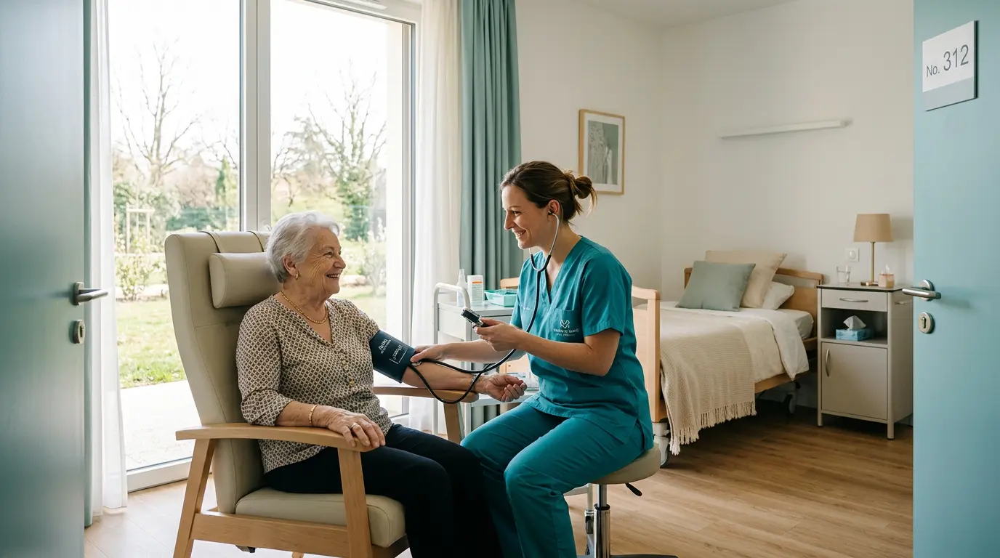

Projet d’Accompagnement à Domicile
Un accompagnement pensé pour chaque personne
Un aperçu de notre approche de l’accompagnement à domicile et de la coordination autour de la personne âgée.
El-Hafeed accompagne à domicile les personnes âgées en perte
d’autonomie, à Rabat et Casablanca.
Nous coordonnons les interventions dans le respect de leur
histoire, de leurs habitudes et de leur rythme.
Accompagner, préserver, soulager — avec dignité, amour et
bienveillance.
Un accompagnement fondé sur l’expérience
El-Hafeed accompagne à domicile les personnes âgées en perte d’autonomie et leurs proches. Notre approche pluridisciplinaire s’appuie sur le respect de l’histoire, des habitudes et du rythme de chacun, à Rabat et Casablanca.

Projet d’Accompagnement à Domicile
Un aperçu de notre approche de l’accompagnement à domicile et de la coordination autour de la personne âgée.

Diplômée en psychopathologie clinique de Paris XI, la fondatrice a exercé plus de dix ans en France avant de créer El-Hafeed au Maroc.
L’infirmière coordinatrice organise les interventions et maintient le lien entre les professionnels et la famille.
L’analyse des pratiques offre à l’équipe un espace d’échange animé par une psychologue, sans jugement.
La psychologue accompagne les familles face aux bouleversements, à l’impuissance et à l’épuisement.
Découvrir le Projet d’Accompagnement à Domicile, les interventions coordonnées et la place des proches.

La fondatrice conduit une évaluation d’admission qui prend en compte l’histoire de vie, les habitudes, la mobilité, l’autonomie et les besoins de la personne.

Le matin est consacré aux soins, à l’hygiène et au confort. L’après-midi, les activités cognitives, les échanges et les sorties suivent le programme défini avec la personne.

L’infirmière coordinatrice travaille en lien avec l’orthophoniste et les aides-soignants pour intégrer les exercices cognitifs au quotidien et assurer la continuité des informations.

L’équipe adapte les soins au rythme de la personne et cherche à préserver ses capacités, ses repères et son autonomie résiduelle.
El-Hafeed coordonne les interventions à domicile pour préserver les repères, les capacités et la dignité des personnes âgées. Le Projet d’Accompagnement à Domicile est construit avec la personne, ses proches et les professionnels concernés.
« Accompagner, préserver, soulager — avec dignité, amour et bienveillance. »